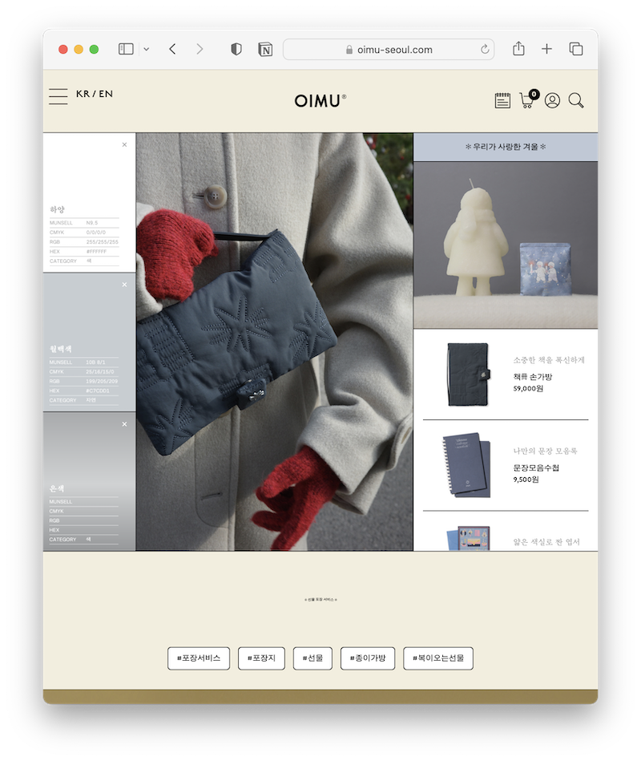

디자인이라고 말하기도 머쓱하지만 사이트 디자인의 영감을 받은 곳을 정리해보겠다. 크레딧처럼 써둬야 할 것 같은 기분이 들었다..
처음 사이트를 계획할 때부터 테두리가 강조된 사이트 디자인을 하고 싶었는데 그때 가장 먼저 떠오른 곳이 녹색연합 홈페이지였다. 언젠가 홈페이지를 구경했을 때 사이트 디자인이 좋아서 인상에 남았었다. 그래서 초반 디자인 잡을 때 가장 많이 참고했다.
정확히 무슨 페이지인지는 모르겠으나 하여간에 뉴닉의 페이지. 뉴닉은 지금 구독하지는 않지만, 뉴닉도 예전에 홈페이지 구경하면서 구획이 정돈된 디자인이 좋아서 기억에 남아있었다. 뉴닉 본 사이트 디자인은 좀 많이 바뀐듯 하고 예전 디자인이 남아있는 페이지가 이 페이지여서 모바일 화면 구성할 때 많이 참고했다.
며칠 사이에 지난한 디자인 수정을 하고 있었는데 인스타에 오이뮤 웹사이트 디자인이 눈에 들어왔다. 테두리를 강조한 디자인으로 나의 추구미와 거의 동일했다.. 그래서 그런지 이 페이지에서 사용한 기본 폰트까지 눈에 들어왔다. 약간 눌린 고딕체. 폰트 고민을 뒤늦게 한번 더 하게 됐다.
+
PC버전 디자인을 먼저 생각하고 모바일을 뒤에 고민했는데 그래서 좀 꼬이기도 했다. 그래도 애초에 초간단 사이트라 꼬였다고 하기에도 민망한 수준이다. 반응형웹사이트를 하여간에 만들게는 됐다. 중간중간 이상하게 보이는 분기점은 당연히 있겠지만 어쩔수 없다. 근데 왜이렇게 사이트가 느린지 모르겠다. 아마도 구질구질하게 코드를 써서 겠지 뭐..
색감은 그냥 좋아하는 색을 다 넣어본 거 같다. 탁한 색을 좋아해서 어쩔 수 없이.. 좀 칙칙한 사이트가 되었다. Color-pallete 사이트를 참고했고, 픽셀체 좋아하듯 윈도우98 이런 시절의 색깔을 어쩔 수 없이 좋아하긴 하는데 또 그걸로 색감을 잡기에는 왠지 너무 노잼 사이트 되는 것 같아서 그래도 색을 좀 다양하게 넣었다.
+
곳곳에 타이틀 격으로 쓴 폰트는 도스필기체. 언젠가 꼭 디자인에 쓰고 싶다는 생각을 했던 폰트여서 선택했는데.. 이제 와서 보니 좀 별론가 싶기도 하고..